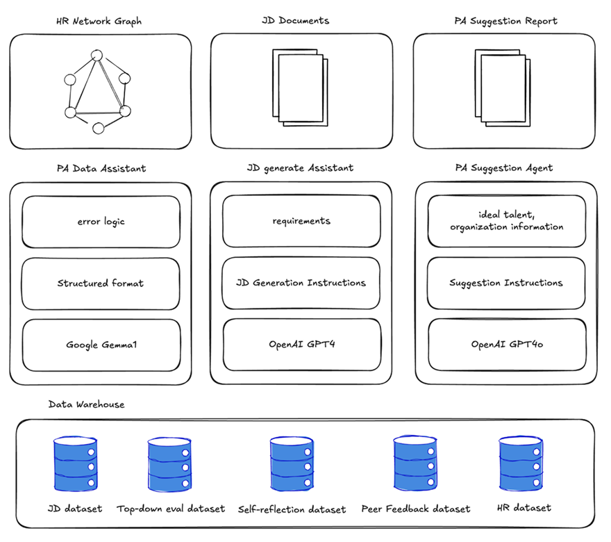
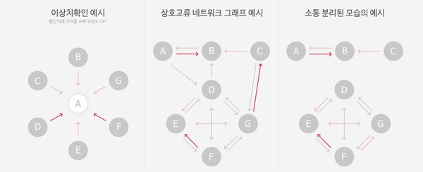

Inhouse LLM · MapReduce · Insight Agent · Network Graph · 데이터 보안
02 Problem
NEOWIZ 피플실은 매 평가 시즌마다 대량의 비정형 텍스트 데이터(역량평가·다면진단·하향평가·동료평가)를 수작업으로 분석해왔습니다. 한 시즌에 2주 이상이 이 기초 분석에 소요되었고, 그 결과 정작 의사결정에 필요한 고차원 분석(조직 구조·인재 배치·협업 네트워크)에는 리소스를 투입하지 못하는 구조적 한계가 있었습니다.
"기초 분석은 자동화하고, 피플실은 고차원 인사이트에 집중할 수 있게 만들자."
단순 요약이 아니라, 수백 명분의 자유 서술형 텍스트에서 일관된 평가 축을 추출하고, 조직장이 의사결정에 쓸 수 있는 형태로 구조화하는 것이 핵심 과제였습니다.
03 Approach
시스템 아키텍처
다음 네 개 컴포넌트로 구성된 End-to-End 파이프라인을 설계했습니다.
PA Data Assistant — LLM 기반 비정형→정형 변환 파이프라인. 대량의 자유 서술 텍스트를 감정·역량·행동 축으로 매핑하며, MapReduce 배치 처리로 수백 명 단위 데이터를 병렬 처리.
PA Suggestion Agent — 정형화된 분석 결과를 입력으로 받아 조직장에게 전달할 인사이트(강점·리스크·코칭 포인트)를 제안하는 Agent.
Network Graph — 동료평가·협업 언급 관계를 그래프로 구성하여 조직 내 소통 구조·허브 인물·사일로를 시각화.
ToolJet 운영 인터페이스 — 피플실 담당자가 코드 없이 데이터 업로드·분석 실행·리포트 추출을 수행할 수 있는 No-code 운영 콘솔.

Figure 1. System architecture of the AI People Analytics pipeline.
Inhouse LLM — 데이터 보안 우선 설계
평가 데이터는 개인 식별·인사 정보가 포함된 최고 민감도 데이터이기 때문에, 상용 LLM API를 외부로 호출하는 방식은 검토 단계에서 제외했습니다. 대신 Gemma · Llama · Mistral을 사내 인프라에 배포하여 모든 추론을 내부에서 수행했고, 모델 선택과 프롬프트는 다음 기준으로 튜닝했습니다.
42개 감정 분류 체계에 대한 일관성 (동일 텍스트에 대한 라벨 안정성)
한국어 평가 어휘의 도메인 편향 보정
배치 처리 시 토큰당 처리 비용·추론 속도
Network Graph 시각화
동료평가·하향평가에서 추출한 협업·언급 관계를 노드·엣지로 변환하여, 조직 내 허브 인물, 정보 흐름의 사일로, 크로스 팀 협업 패턴을 한눈에 볼 수 있도록 구성했습니다. 조직장은 이 그래프를 통해 개별 점수표에서는 드러나지 않는 구조적 관계를 파악할 수 있습니다.

Figure 2. Network graph visualization of intra-organization collaboration.
04 Timeline
2023.10 — Jira 프로젝트 생성, 데이터 수집·분석 착수
2024.04 — Phase #1 발표, 42개 감정 분류 체계 고도화, Gemma · Llama3 사내 환경 구축
2024.04 – 05 — 실 데이터 수령·분석 수행, 공유 대상 확정 (실장급, 올림포스·S2·JnK 조직)
2024.06 — 실장급 리포트 완성 및 메일 공유
2024.11.14 — PARI PA 컨퍼런스 공동 참석
05 Impact
분석 시간 85% 단축 — 2주 이상 → 약 3일. 피플실이 고차원 분석·의사결정 지원에 리소스를 재배분할 수 있게 됨.
대표이사 및 조직장 단위 리포트 공유 — 실장급 이상 의사결정 라인에 분석 결과가 직접 전달.
월간인재경영 2024.04호 협업 사례 기고 — 업계 HR Tech 미디어에 본 프로젝트 사례가 게재. (링크)
후속 활용 요청 — 피플실에서 2026년 평가 시즌에도 동일 파이프라인을 재사용하기 위한 연장 요청.
06 Takeaways
민감 데이터 × LLM은 "인프라 설계가 곧 제품 설계" — 모델 성능보다 데이터가 경계 밖으로 나가지 않는 구조를 먼저 확정하는 것이 신뢰를 얻는 가장 빠른 길이었음.
No-code 운영 인터페이스(ToolJet)의 위력 — 피플실 담당자가 개발자 개입 없이 파이프라인을 반복 실행·검증할 수 있게 되자, 실제 활용 빈도와 프로젝트 생존율이 크게 올라감.
"점수표가 아닌 관계"를 보여주는 UI의 설득력 — Network Graph는 숫자 리포트보다 조직장의 의사결정을 유의미하게 움직인 산출물이었음. 시각화의 선택이 곧 인사이트의 전달력.
07 Tech Stack
Google GemmaLlamaMistralPythonFastAPIPostgreSQLToolJetNetwork Graph